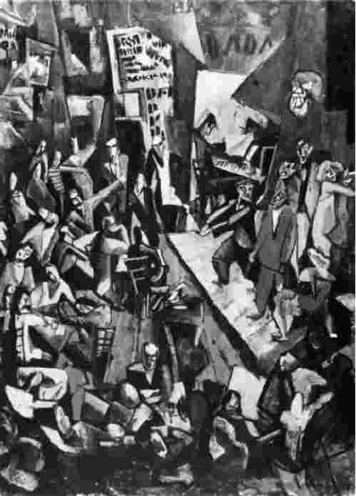
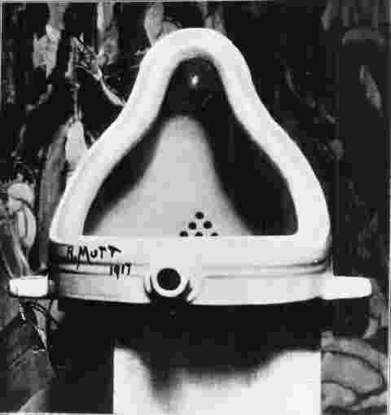
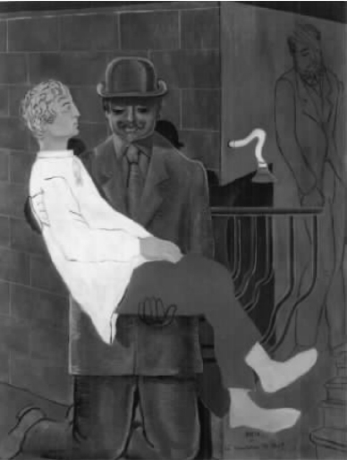

20世纪初社会混乱多变。第一次世界大战和俄国革命深刻地改变了人们对世界的理解。弗洛伊德和爱因斯坦的发现以及机器时代的技术革新极大地转变了人类意识。在文化方面，乔伊斯的小说和T.S.艾略特的诗歌——前者的《尤利西斯》和后者的《荒原》都发表于1922年——别具一格地显露出新的“现代主义”的感受和认知模式，其特征是引人注目的非连续的感觉。因此，理论家马歇尔·伯曼看到，人们在享受欢欣愉悦的同时也感到灾难迫在眉睫，这是对当时破碎的生活状况的反映。伯曼把这种感觉定义为现代主义情感。
20世纪初期的艺术运动有力地反映了这一新的思维倾向。有些运动，比如在1910年至1913年间达到巅峰的立体主义和未来主义，在技术层面上大胆创新。它们在传统绘画平静的表面下探索意识自身的结构。然而，尤其因为达达和超现实主义相当重视心理研究，我们应该可以从这两次运动中发现对现代心灵最有力的探索。达达认为自己部分地重演了第一次世界大战引发的心灵动荡，而超现实主义所颂扬的非理性主义可以被看作是对打着文明的幌子发挥作用的各种力量的全盘接受。本章将概述这两场运动相互重叠的历史，不过首先要解决的是：是什么态度把它们和20世纪早期的其他艺术运动联系在一起的呢？
达达和超现实主义首先是“先锋派”运动。法国乌托邦社会主义者亨利·德·圣西门于19世纪20年代首先使用该词，它最初具有军事含义，后被用来指代一位现代艺术家应该渴求的进步的社会政治立场和审美姿态。宽泛地说，19世纪的艺术是资产阶级个人主义的同义词。被资产阶级所拥有或由资产阶级制度所体现的艺术是资产阶级成员用来暂时逃避物质束缚和日常生存矛盾的一种手段。这种情形于19世纪50年代受到了法国现实主义画家古斯塔夫·库尔贝的挑战。现实主义把社会主义的议事日程和与之相称的美学信条结合起来，可以说，实际上代表了艺术领域中第一种刻意的先锋派趋势。到20世纪初叶，几场重要的艺术运动——如意大利未来主义、俄国建构主义或荷兰风格派，以及达达和超现实主义——致力于反对任何把艺术和现代世界中的偶然经历截然分开的举措。在政治方面，它们这样做的理由发生了变化——例如建构主义者就直接对俄国布尔什维克革命做出反应——但是它们倾向于分享同一信念，即现代艺术需要与观众形成一种新的联系，产生毫不妥协的崭新形式，以便与社会经历的转变相对照。因而，文化理论家彼得·贝格尔在20世纪70年代写道，20世纪早期欧洲先锋派的使命就在于破除艺术“自治”（“为艺术而艺术”）的思想，将艺术融入他所说的“生活实践”之中。
因此，达达和超现实主义有着同样清晰的先锋派信念，即社会和政治的激进主义必须与艺术创新相结合。艺术家的任务是超越审美愉悦，影响人民生活：让他们以不同的方式看待和经历世界。譬如，超现实主义者的目标就与法国诗人阿尔蒂尔·兰波“改变生活”的号召相差无几。
正如上文已经提及的那样，20世纪早期的现代艺术——例如毕加索绘画中分裂的碎片和布拉克的立体主义——体现了与传统艺术常规的令人震惊的断然决裂。标准的艺术史认为这一决裂代表了19世纪晚期法国艺术家如高更、修拉、梵高和塞尚等人的影响，以及19世纪八九十年代受欧洲象征主义影响而产生的情感的普遍转移。例如，在塞尚和高更的绘画中，空间被展平，色彩彻底远离自然主义，夸张得失真。此类前提为放弃文艺复兴的绘画传统，如线状透视法，铺平了道路。毕加索于1907年创作的原始立体主义作品《亚维农的少女》成为打破传统的转折点。与此同时，德国表现主义和法国野兽派以表现式的、非自然主义风格的色彩使用法开展了更进一步的实验。
达达和超现实主义的新的绘画语言当然得益于立体主义、表现主义和未来主义。例如，立体主义的拼贴手法直接导致了达达主义者们采用“照片蒙太奇”手段。但是达达主义者和超现实主义者对隐含在许多立体主义作品中的一个观念——单是形式革新就可以为艺术提供基本原理——深感不快。尽管立体主义艺术旨在震慑或迷惑观众，使他们重新思考与现实的关系，它最终还是“自治”的艺术，即为艺术而艺术。对达达和超现实主义来说，它们下的赌注比这要高出很多。像某些20世纪的其他艺术运动一样，如未来主义反映了在20世纪最初的十多年间迅猛发展的、多感觉的世界，达达和超现实主义致力于探索经验本身。
这种对活生生的经验的专注意味着达达和超现实主义对以下这一观念所持的矛盾态度：“艺术是神圣的、远离生活的”。这一点至关重要，也是为何在艺术史中我们不能把达达和超现实主义看成是具有特殊风格的某些“主义”的原因。实际情况是，本书所涉及的艺术家较少在风格上同质，而且对他们而言，文学和视觉艺术同等重要。把这些运动描绘成受理念驱使的生活态度而非绘画或雕塑流派可能更加准确。任何形式，从文本到现成品再到照片，都可被用来体现达达或超现实主义思想。在达达中，对狭义艺术的基本怀疑常常转变成对其价值和制度的公开反对。因此，在这一点上，我们要撇开普遍性不谈，来考察达达的整体历史轮廓，然后在此基础上讨论超现实主义。
达达的“起源神话”围绕诗人及理论家雨果·巴尔这个人及其1916年2月在苏黎世镜子胡同开张的伏尔泰酒馆而展开。
这家酒馆最初是以巴尔此前曾经旅行并寄居过的城市，即慕尼黑和柏林的酒馆为原型而设计的。像那些地方的酒馆一样，伏尔泰酒馆提供各式各样的节目表演，从街头歌谣的吟唱到以突出的表现主义模式创作的诗歌朗诵，应有尽有。在酒馆里，那些和巴尔一样旅居国外的早期同伴包括其女友兼酒馆演员埃米·亨宁斯，罗马尼亚诗人特里斯坦·查拉、艺术家马塞尔·扬科，阿尔萨斯诗人兼艺术家汉斯／让·阿尔普（他这两个可以互换的名字反映了他的法／德双重国籍），以及阿尔普的伴侣、出生于瑞士的纺织设计师和舞蹈家苏菲·达厄贝。不久之后，德国诗人理查德·许尔森贝克加入其中，后来加入的还有德国作家瓦尔特·塞纳、德国的实验派电影制片人汉斯·里希特以及瑞典的实验派电影制片人维金·埃格林。

图2 马塞尔·扬科，《伏尔泰酒馆》，布面油画（已丢失作品的照片），1916年。
虽然这个团体在伏尔泰酒馆上演的表演活动最初十分传统，但很快它们就变得富有挑衅性了。查拉这样回顾1916年6月一场特别声名狼藉的表演：
在一定程度上，这些冲突事件是1909年至1913年期间紧随意大利未来主义者到来的。未来主义者在意大利和欧洲各地进行了系列演出。尽管伏尔泰酒馆的表演者，如巴尔和许尔森贝克对未来主义的了解不算全面，却知道未来主义的领袖人物马里内蒂的实验性诗歌或“自由对话”，也知道未来主义表演者所使用的刺耳的嘈杂声或一连串无意义的噪音。巴尔发展了“语音”诗歌的形式，让生造的词汇和基本的语言片段混杂其中。他于1916年创作的诗歌《商队》似乎在模仿小号声和一群大象缓慢行进的声音，开始了“Jolifanto bambla ǒ falli bambla”的呢喃。其他达达诗人和演员也加入进来壮大力量，一起背诵“同步诗歌”，即多人同时大声朗诵或吟唱诗文。在某种程度上，这些技巧是以未来主义诗歌为蓝本并从中演化而来的。然而，与其意大利先驱相比，达达的语音诗歌更加“抽象”，毫不妥协，且达达主义者也不像未来主义者那样对技术进步充满信心，也没有他们那种拥护军事的热忱。
达达表演也借鉴了表现主义的一些元素：后者在那之前一直是风靡德国的艺术风格，而在那之后伏尔泰酒馆中的德国籍艺术家逐渐摆脱了这种风格。像法国立体主义一样，表现主义者曾一度崇拜非洲艺术，而且伏尔泰酒馆的演员偶尔也参与“黑人舞蹈”。人们可以从许尔森贝克用来刺激酒馆观众的连续不断的、著名的击鼓声中听到更多原始意义的弦外之音。
伏尔泰酒馆的艺术活动种类繁多，从诗歌朗诵和舞蹈表演一直到汉斯·阿尔普极端简化的几何图形拼贴，后者常在表演中间展出。这说明达达主义者平等看待视觉艺术和文学作品，这一态度基本上是19世纪类似浪漫主义和象征主义的文化运动以及未来主义和表现主义的遗产。但是这一团体一直无法具备明确的艺术判断力以及反抗性的文化精神；他们最终在受到其他事物影响的同时，也会受到社会和政治现实的影响。他们之所以选择苏黎世是因为这是个中立的地方，而他们自己的祖国则正陷于第一次世界大战的深渊之中。在其他地方爆发战争的同时，苏黎世的达达主义者们认为战前的艺术多半是颓废的。这一看法很重要。如果说油画和铜铸雕塑已经变成上层阶级闺房中的内部装饰，那么达达主义者将会用纸张或现有的物品组装出新的结构。如果说诗歌原本被视为传达细腻情感的工具，那么他们就把它拆碎，引导它成为含混不清的话语和咒语。作为一个团体，他们因为憎恨艺术的专业化而团结在一起，把自己看成是文化的破坏者，但他们反对的未必是艺术本身，而是艺术为人性的某种观念而服务的方式。尤其是阿尔普，他在文章中将把战前的艺术与自我中心主义及对人性的过高评价等同起来。他在后来的写作中将说出达达主义者的共同感觉：
有趣的是，此处阿尔普提到了艺术的治疗作用和“事物的新秩序”，有重要的建设性意义。其他达达主义者则较为消极，意图破坏作为一种概念的艺术。阿尔普用一种救世主般的预言认定，艺术可以被重新发明。但是达达的到来将代表什么？让我们重新回到“达达”一词，其起源让人十分费解，因为每个团体的不同成员都宣称他们在不同的情况下发现了这个词，似乎正是该词的十足开放性吸引了他们。《逃离那个时代》是雨果·巴尔写于达达年间的日记，现在是研究苏黎世达达运动的重要原始资料之一。巴尔在其中回忆道，在伏尔泰酒馆活动了几个月之后，团体成员开始意识到他们需要一个集体出版物，以及随之而来的某种标签：
然而，许尔森贝克却回忆说，他在和巴尔一起快速翻阅词典时发现了这个词。看到它，他深受触动，感叹道：“这个孩童发出的第一个声音表达了一种原始感，它从零开始，是我们艺术的新生。”重要的是，巴尔强调这一概念的国际流动性，把它看作是一种文化世界语，而许尔森贝克则强调破裂和新生的观念。这两种态度都是达达的重要组成部分。除此之外，这个词又自相矛盾地代表既是一切又什么都不是。它相当于是把肯定和否定荒谬地混合在一起，是一种伪神秘主义。艺术是枯萎的宗教，而达达诞生了。
然而，此处复杂的是，达达同时也在其他地方诞生了。1915年两个旅居国外的法国人马塞尔·杜尚和弗朗西斯·皮卡比亚来到了纽约差不多相同的地点，更加远离了欧洲战争。两位艺术家战前在法国艺术圈中都很出名，但是他们却被吸引到美国，感觉这个国家更能接受新思想。杜尚受立体主义影响而创作的画作《下楼梯的裸女2号》在巴黎先锋派中几乎未获成功，但是当它旅行到达纽约后，即在1913年的“军械库展览会”中大获成功。到1915年，杜尚一方面结合由马蒂斯介绍到法国艺术中的视觉革新，另一方面结合立体主义，形成了他所谓的“反视网膜”的立场。杜尚对只吸引人的眼球而非智慧的艺术的厌恶与他所怀有的机器时代败坏了人类心灵这一愤世嫉俗的态度紧密相连。人文主义者的华丽辞藻继续维护着有关心灵和浪漫爱情的信念，但是杜尚和皮卡比亚则把它看作是面对这个社会的机械化趋势时产生的自我欺骗。1915年至1916年间，他们开始创造出一种机器和人混杂的戏仿语言，这在杜尚的玻璃画《甚至，新娘也被她的男人剥得精光》（又名《大玻璃》）中体现得最为显著。1923年这幅作品因“确实未完成”而被放弃。
杜尚讨厌将视觉艺术与“手工艺”相联系，同时相信思想应取代人工技巧成为艺术作品的首要成分。这些想法促使他自1913年起开始选择“现成品”作为艺术客体。最为臭名昭著的是，1917年4月他向纽约独立艺术家协会的展览提交了一个男性小便池——戏谑地签上了R.穆特，并将它命名为《泉》。
虽然根据规定，会员只要缴纳会费就有权参展，但这件作品还是被立场坚定的组委会拒绝了。被拒本身就是一种达达表现。

图3 杜尚，《泉》，现成品。载于《盲人》杂志第二期（1917年3月）。摄影：阿尔弗雷德·斯蒂格利茨。
至此，我们对苏黎世达达以及杜尚和皮卡比亚所从事的部分达达活动有了一定了解，但是20世纪20年代早期之前这一名称在纽约几乎无人使用。为此，杜尚和皮卡比亚在1915年至1917年间的活动常被冠以“原始达达”的标签。当然，很快这两位欧洲人身边就形成了一个规模相当庞大的先锋派网络，其中包括在纽约的“291”美术馆积极倡导先锋派艺术的重要人物，美国摄影师阿尔弗雷德·斯蒂格利茨及其同事，即所谓的“斯蒂格利茨艺术圈”的成员。另外还有以富有的艺术收藏者，杜尚的赞助人沃特·阿伦斯伯格和路易斯·阿伦斯伯格命名的“阿伦斯伯格艺术圈”的成员。然而，它的主要人物还是后来与杜尚一起合作了不少项目的美国摄影师曼·雷，此外还有因其与生俱来的怪癖而成为达达吉祥物的另外两个人：变化莫测的阿瑟·克拉旺和出生于德国的作家埃尔莎·冯·弗朗塔格——诺布朗霍文男爵夫人。
1918年达达延伸到柏林，这是由理查德·许尔森贝克的辩论热情所带来的结果。此前一年，他离开苏黎世前往柏林。在柏林，由于全城笼罩在严酷的社会现实之中，“为艺术而艺术”的合法性遭到了更为明显的破坏。此时德国刚刚战败，因为要对法国和比利时进行战争赔偿，它正面临着经济崩溃。除经济不稳定之外，受1917年俄国布尔什维克革命的影响，德国处在社会革命的边缘。当权的相对保守的社民党政府遭到了共产主义者，尤其是斯巴达克联盟的强力反对，便对其成员采取了镇压行动。因此，柏林达达主义者的高度政治化不足为奇。他们在“达达俱乐部”的联盟下，又分成两个友好团体。一个团体包括瓦尔特·梅林、维兰德·赫茨菲尔德和赫尔穆特（即后来的约翰）·哈特菲尔德、乔治·格罗兹（后三位是共产党的正式党员），他们是共产主义的同情者。另一个团体包括劳乌尔·豪斯曼、汉娜·赫希和约翰内斯·巴德尔，他们则更同情无政府主义。
柏林的反艺术清楚地显示出它对表现主义这一德国主流审美趋势的公开反对。在柏林，对人文主义影像学和放纵感官的“视网膜艺术”的杜尚式的厌恶变成了对“内在性”和精神化了的表现态度的不满。虽然实际上格罗兹、豪斯曼等柏林艺术家之前曾用与表现主义一致的绘画风格来进行创作，如今理查德·许尔森贝克在1920年的一篇重要宣言中却对先前的这一代艺术家大加批评，断言：“他们在与自然主义的斗争中，借口宣传灵魂，实际上是返回到一种抽象的、可悲的姿态，这种姿态假定生活是舒适的，不受内容或冲突的伤害。”与他们相反，许尔森贝克争辩道，一种新的艺术——柏林达达主义者的艺术——眼见着“被上周的爆炸震得粉碎……永远尝试在昨天的崩溃之后收集残骸”。
柏林达达团体抛弃了传统绘画，支持豪斯曼的语音诗歌，或是豪斯曼、赫希、格罗兹和哈特菲尔德等人对照片蒙太奇手法的高度原创性的有效利用，这一点不足为奇。他们的早期照片蒙太奇中破碎的摄影形象最终让位于约翰·哈特菲尔德所擅长的看起来天衣无缝的摄影画面。在表现机器方面，那些破碎的摄影形象可以宽泛地与纽约达达主义者所采用的方式相比较。为了达到强烈的讽刺效果，哈特菲尔德的一流蒙太奇使用了本质上属于超现实主义的并置技巧。1920年6月在柏林举办的“达达交易会”是达达的一次重要的公开示威活动，受其直接后果的影响，柏林达达寿终正寝。此后，哈特菲尔德将会无情抨击正在德国抬头的纳粹主义，他的照片蒙太奇常常会出现在《工人画刊报》等共产主义报刊的封面上。
在德国其他地方另有一些达达前哨。汉诺威是库尔特·舒维特的故乡，与柏林相比较为保守、安静。舒维特与豪斯曼、赫希等柏林艺术家交好，但由于他缺乏政治承诺而且被认为有“资产阶级”习气而被许尔森贝克拒绝进入“达达俱乐部”。舒维特以独特的风格创作，率先尝试了一种拼贴形式，其中城市的碎屑（废弃的车票、糖果包装纸等）被组成了抽象的视觉结构，而后间接地被重新赋予了价值。舒维特从自己一幅拼贴中出现的一个单词——“德国商业银行”（Commerzbank）中抽取出“莫斯”（Merz）作为标签来命名他的活动。20世纪20年代中期，他创造出一个巨大的原始装置，这个被称作“莫斯堡” [1] 的作品由他的几间房间发展而来。20年代初期，舒维特与参与国际建构主义运动的艺术家建立了紧密联系，这一运动的几何分离原则曾在德国和荷兰广泛传播。荷兰风格派运动的创始人之一特奥·凡·杜斯堡在这段时间化名I.K.邦塞特间接参与了达达运动。1922年9月，他和舒维特、阿尔普、豪斯曼、查拉等人一起参加了在魏玛举行的“达达与建构主义大会”，与重要的德国建构主义者如拉斯洛·莫霍利－纳吉和埃尔·李斯特斯基等建立了联系。有几年时间，在这些团体的内部和团体之间出现了零星合作。就某种意义上而言，这一段经历超出了达达。至少达达反对纯美学实验，但是阿尔普和舒维特则出于对抽象概念的极大兴趣，对这一规则不加理会；而且，不管怎么说，苏黎世达达的论调中包含了对“新秩序”的呼唤。
战后不久即被英国占领的科隆远没有柏林那么混乱，这就为1918年至1920年间又一个达达分支的出现创造了环境。此处的主要人物有马克斯·恩斯特和阿尔弗雷德·格吕内瓦尔德，后者为自己选用了笔名约翰内斯·巴格尔德。巴格尔德这个姓可被翻译为“钱袋”，间接影射了格吕内瓦尔德的银行家父亲。科隆达达的组成人员还包括弗朗兹·塞威特、海因里希·赫勒和安格利卡·赫勒等人在内的一个更加政治化的派系，但科隆团体实际上仅仅围绕过一个主要活动联合起来，那就是1920年4月举办的无政府主义的“科隆达达交易会”（见第二章）。除此之外，恩斯特那些本质上无关政治但又极其荒诞的拼贴和照片蒙太奇，以惊人的形象碰撞为特征，为这一达达小分队设定了基调。和杜尚和皮卡比亚的作品一样，我们在恩斯特对传统宗教圣像学的再加工中可以发现他对之前艺术的强烈不满。
科隆在文化意义上置身于德国和法国之间，因此与其他德国达达主义者相比，恩斯特对巴黎的期待更高。他最终于1922年来到巴黎。巴黎达达是个复杂事件，因为它的成员和拥戴对象常常变换。随着皮卡比亚——达达自封的虚无主义大使的到来，巴黎达达于1919年初诞生。皮卡比亚此前曾在瑞士逗留了一段时间，其间曾在苏黎世出现。在苏黎世达达的编年史作家汉斯·里希特看来，这段时间代表着“一次死亡经历”。不管怎么说，苏黎世达达的最后阶段是虚无的：瓦尔特·塞纳于1919年4月在达达的最后一次公开活动上发表了十分沮丧的《最后一篇松散的宣言》。在巴黎，皮卡比亚接待了重访祖国的杜尚。杜尚令人费解的表象人格通过一些批评传统信仰的行为表现了出来。例如他在《长胡子的蒙娜丽莎》（LHOOQ）中把字母LHOOQ（如果大声读出来的话，这些字母相当于法语中的一句话：“她有个热屁股”）写在一张被临时画上胡子的《蒙娜丽莎》的复制品上。他的举动很快赢得了一群聚集在《文学》杂志周围的巴黎年轻诗人的欣赏。这群人实际上由安德烈·布勒东“领导”，其中的著名成员包括路易·阿拉贡、泰奥多尔·弗伦克尔、保罗·艾吕雅和菲利普·苏波。
布勒东自身的个性极具感召力，同时他又深受其他楷模的影响。对他至关重要的人是法国诗人纪尧姆·阿波利奈尔，他是毕加索的伙伴，也是立体主义的主要倡导者，于1918年去世。在多个方面，布勒东即将像阿波利奈尔那样促进先锋艺术的发展。另外一个影响来自布勒东的朋友雅克·瓦谢。瓦谢是个花花公子，他的苦涩幽默（他给自己取名为“乌没”）和无意义感使得他在1919年停战条约签订后不久服用过量鸦片自杀。布勒东记下了这些先行者以及杜尚的所作所为，形成了自己极其重要的理性达达品牌。
1919年初，布勒东注意到了特里斯坦·查拉，后者在苏黎世团体出版的杂志《达达》第三期上发表了有力的1918年宣言，从虚无主义的论调转换到救赎思想。“‘热爱你的邻居’这一准则是虚伪的。‘了解你自己’虽不切实际但尚可接受，因为它包含敌意。没有怜悯。大屠杀之后我们不再指望拥有净化的人性。”查拉用熟稔的苏黎世风格写道。查拉于1920年1月到达巴黎，但在随后几年里，倾向于寻求一致观念的布勒东渐渐与无政府主义的皮卡比亚和查拉疏远了，并不可避免地成为了先锋艺术的领袖。
巴黎达达的基调相当消极。虽然它反对战后当权的法国右翼政府，但巴黎达达很少像柏林达达那样公开政治化，也与苏黎世达达早期的原始建构文化精神相差甚远。它的主要表现是一系列的公然挑衅，其中一次是在1920年3月，布勒东大声朗读了皮卡比亚的《食人者宣言》：
从根本而言，巴黎达达和其他地方的达达一样，向过时的艺术论调宣战。在同一次活动中，皮卡比亚展示了一幅油画，上面画着一只塞饱了的猴子，它的四周写着：“塞尚的画像，伦勃朗的画像，雷诺阿的画像……”
到1922年中期，达达运动最后盛开的花朵巴黎达达已经陷入了自身的消极之中。布勒东组织了旨在确定先锋活动总体方向的“巴黎代表大会”，暗指达达变成了它曾避免成为的东西：艺术史上的又一次运动。这次大会标志着巴黎达达的终止。在此，布勒东对文化政治的爱好显而易见。他指责达达“粗野的否定”以及“为丑闻而丑闻”的爱好。他抓住这个机会重新引导先锋艺术的重要事项，为超现实主义铺设了道路。
马克斯·恩斯特于1922年晚些时候从科隆来到巴黎，带来了与德国达达活动的联系，虽然并不是德国达达最为政治化的活动。1922年到1924年间，达达和超现实主义之间产生了一段空隙，这段时间被参与者称为“朦胧运动”。在此期间，布勒东、阿拉贡、艾吕雅和新加入到《文学》圈子的罗贝尔·德斯诺斯、勒内·克勒韦尔等人一起参与了各种实验活动。其中最具戏剧性的是“降神会”。在该活动中，一些成员（主要是德斯诺斯）在自我催眠状态下回答问题时表现得很古怪。这种对非理性的兴趣曾在达达中作为反资产阶级的自由的心灵表演而得到表现，现在正在被系统开发。战争期间，布勒东在法国军队中担任医疗勤务兵时熟悉了西格蒙德·弗洛伊德的无意识理论。这位精神分析学家的著作在20世纪20年代早期被首先译成法语，布勒东和友人很快把无意识的科学思想吸收到诗学兴趣中，并由此开发了“自动写作”技法。“自动写作”部分地模仿了弗洛伊德的“自由联想”，指在事先未形成任何想法的情况下快速写作。然而，1921年布勒东和弗洛伊德在维也纳的会面清楚地表明，弗洛伊德并不赞成把他的治疗手段加以改造，运用到此种艺术创作之中。
到1924年，布勒东觉得时机成熟，可以把这些趋势整合在一个统一的名称之下。经过长时间的酝酿之后，布勒东发表了《第一次超现实主义宣言》，超现实主义诞生了。
超现实主义一词最初由布勒东的偶像阿波利奈尔于1917年创造出来。阿波利奈尔曾试图描述艺术中新的超逻辑精神，这一模糊的尝试在布勒东1924年的宣言中变得十分精确。其中，超现实主义被描述成是“基于某些此前曾受到忽视的联想的超级现实、梦的无所不能、客观公正的思维游戏等信念之上”。这一宣言基本上是诗人的章程，它很少考虑到盛行其时的视觉艺术，而是优先考虑“心灵的自动性……通过书写文字或其他方式”。要做到这一点，就要“摆脱理性施加的所有控制，不作任何美学考虑”。这一事实清晰地表明，超现实主义继承了达达的一个中心原则，即对自我指涉的自治艺术的批评，这又让我们回到了先前的讨论。和达达一样，超现实主义致力于消除艺术所有权和“生活”所有权之间的区别。布勒东把弗洛伊德称为超现实主义运动的指路明灯，将他视为实施“调查研究”的“人类探索者”而非美学生产者。人们除了指望一场革命之外别无期待。布勒东声称“想象也许在某种程度上……正在要求权力”。
超现实主义以一场文学运动开始，早期先驱是法国诗人和作家，如阿尔蒂尔·兰波、埃塞德·杜卡赛（洛特雷阿蒙伯爵）、雷蒙·胡塞尔和阿尔弗雷德·雅里。随着20世纪20年代向前迈进，视觉艺术家，尤其是画家，越来越受到“图画诗歌”理想的吸引，并加入到这一行列中来。马克斯·恩斯特的艺术风格主要受意大利画家乔治·德·基里科复制作品的影响，后者有时被视为“梦之绘画”的先行者。
尽管梦成为了超现实主义艺术家最重要的表现主题，但把它们转变成视觉现象却需要大量有意识的思考。正如不同评论家指出的那样，这与摆脱理性控制的理想相反。类似这样的批评性干预在超现实主义中多少变成了一种行为标准，要求不断地重新评价准则。确实，对“梦之绘画”的攻击促使安德烈·马松、胡安·米罗等艺术家创作出了曾长期由该运动的诗人加以实践的自动性的视觉对等物。“梦之绘画”的另一个缺点是，它一下子就能被理解，而梦却是随着时间的推进而展开的。因此，这就为电影回应超现实主义的要求开辟了道路。20年代后期出现了两部十分重要的电影：《一条安达鲁狗》和《黄金时代》。它们都是由被吸引至巴黎的西班牙人路易斯·布努艾尔和萨尔瓦多·达利合作完成的。
1929年达利的兴趣转向了超现实主义，这显示了超现实主义在吸收新天才方面有多么成功。与此同时，一些名人也会偶尔提供帮助：毕加索虽未正式加入，但在20年代中晚期曾同意杂志《超现实主义革命》刊登其几幅新作；有些人，如画家恩斯特和伊夫·唐居伊，成为了该运动的支柱。另一个重要人物是摄影师曼·雷。纽约达达运动时期他曾是杜尚的合作者，现在几乎成了超现实主义正式的专职摄影师，同时他还自己制作实验性的“雷氏相片”（不使用照相机的照片），并在工作室里研究裸体画。其他一些人偶尔获得或失去越来越专制的布勒东的好感，有几个人因为没能在理论或意识形态上达到一定的纯净而被草草开除会籍。就这一点而言，1929年是个分水岭，因为主要人物如乔治·里伯蒙——德塞涅、罗贝尔·德斯诺斯、罗歇·维塔克、安德烈·马松、菲利普·苏波、安托南·阿尔托、人种志学作家米歇尔·莱里斯等，在一次特别召集的会议上被指责未能遵守团体协议，被布勒东在《第二次超现实主义宣言》中公开斥责。

图4 马克斯·恩斯特，《圣母怜子∕夜之革命》，布面油画，1923年，伦敦泰特美术馆。
事实真相是，有一段时间超现实主义的两个团体曾经不和。一个团体是以布勒东在巴黎的居住地和团体会议召集地“封丹街”命名的超现实主义者，另一个团体是包括马松、米罗、莱里斯等人在内的“布洛梅大街”。后者对尼采哲学的偏好总是使他们与布勒东格格不入。当他们获得人种志学专家，作家乔治·巴塔耶的好感时，布勒东觉得必须采取果断行动，因为在20世纪20年代后期，巴塔耶主要通过他的杂志《文献》成为了布勒东在知识分子圈内的主要对手。布勒东的第二次宣言有一部分就旨在削弱乔治·巴塔耶的影响。在巴塔耶看来，布勒东的思想因其唯心主义的假设而存在缺陷。布勒东的美学植根于黑格尔的辩证法，他认为当两个互不相容的形象产生碰撞时就产生了一种新的现实。超现实主义者经常列举的一个例证是被洛特雷阿蒙延伸了的明喻：“美丽就像是解剖台上缝纫机和雨伞的偶遇。”与这种启示美学观相反，巴塔耶倡导他所谓的“基本的唯物主义”，即艺术应该直面人性中最低劣或最兽性的部分。因此，赞成巴塔耶观点的马松等艺术家往往会创作在布勒东看来是无端冒犯的形象。对布勒东更直接的攻击由巴塔耶阵营1930年出版的一本小册子《一具尸体》发起。布勒东被描述成殉难的基督，因其苛刻的评判和妄自尊大而遭到讽刺。
无论如何，布勒东的《第二次超现实主义宣言》标志着超现实主义的哲学方向发生了转变。之前运动内部侧重于精神内容，或布勒东所谓的“内在模式”。现在的重点是内在王国与外部现实之间的交互作用以及它们的辩证关系。这一新方向对视觉生产产生了影响。在很多方面，达利的迅速崛起取决于“梦之绘画”的重新流行，但职业战略家达利巧妙地把工作重点从内在幻想转移到了他所描述的对于外部现实的“偏执狂的解读”上。与此同时，在达利和出生于瑞士的艺术家阿尔贝托·贾科梅蒂及梅雷·奥本海姆的引领之下，1930年前后超现实主义者当中出现了一次真正的对物品的崇拜。此处的重点是，艺术家要在外部世界中找到符合无意识要求的客体，以此彻底改造内在现实与外在现实之间的联系。超现实主义早期的对“意外相遇”的崇拜与此同时也升温了。在神奇的、充满隐蔽意义的网状巴黎，超现实主义漫游者会让自己得到“客观机会”的垂青。尽管“客观机会”与超现实主义潜在的先锋文化精神相一致，但这种与外部世界的崭新联系在政治上表现得更为真实。
超现实主义者与政治的联系始于1925年，当时他们反对法国对摩洛哥的殖民战争。到1927年，他们的强烈抗议不仅针对法国右翼政府而且还针对总体上的资本主义，为此他们还加入了法国共产党。但是，从一开始他们就发现很难使自己的政治倾向和艺术目标相吻合。正如皮埃尔·纳维尔等内部评论家所表明的那样，集体主义的政治气质怎么能和超现实主义诗歌及艺术的极端个人主义相一致呢？是否该在社会革命之前先来一场思维方式的革命，抑或相反？1929年布勒东团体开始整肃运动，部分以团体的团结一致与个人主义之间的关系为基础，这使问题的解决变得尤为迫切。超现实主义者如今要对苏联新的斯大林政权提出来的要求作出回应。1932年路易·阿拉贡因支持共产党而正式脱离超现实主义后，这些问题就显得尤为严重。随着20世纪30年代向前发展，“社会主义现实主义”——一种面向大众且通俗易懂的现实主义艺术——成为被官方正式认可的艺术。布勒东通过托洛茨基式的努力，致力于文化兼政治的革命，果断地让超现实主义者摆脱了苏联的正统思想。
尽管存在这些意识形态方面的动荡，超现实主义在20世纪30年代还是吸引了不少新成员。他们中有些是女性，包括英国画家和作家莉奥诺拉·卡林顿，她主要探究神秘主题，以及法国作家和摄影师克劳德·卡恩，她通过创作自我形象来质疑自己的性别身份。在男性超现实主义艺术中，通常以异性恋出现的对性欲的表现一直占据首位。20世纪30年代，德国人汉斯·贝尔默的色情作品开始出名。18世纪的法国色情作家德·萨德侯爵被认为是自由倡导者，暴力和道德上犯忌的幻想作品在以他为中心的一群超现实主义者中得到了许可。
20世纪30年代后期，超现实主义作为一套教义传播到了欧洲其他国家以及其他大陆。早在20世纪20年代，超现实主义就已经吸引了西班牙、德国等国的重要人物来到巴黎。随着20世纪30年代世界政局愈加动荡——无数国家在不同程度上受到了共产主义和法西斯主义这两种截然对立的政治的影响——这场运动的原则和价值在各种各样的新环境下吸引了左派和反法西斯主义的艺术家及作家。从这种意义上而言，它常在其他国家达到了在法国不可能达到的政治高度。第一个重要的子团体于1926年由作家保罗·罗杰在比利时成立，成员包括E.L.T.梅森、勒内·马格里特等艺术家，以及后来的保罗·德尔沃和摄影师拉乌尔·乌贝克。20世纪30年代中期，超现实主义已在东欧站稳脚跟。20世纪30年代早期，两个罗马尼亚人维克多·布罗纳和雅克·哈洛德作为重要人物加入了巴黎团体，但更为重要的是1934年布拉格团体的成立，其著名成员有卡雷尔·泰格、拼贴画家金德里奇·斯蒂尔斯基、画家约瑟夫·西玛和陶妍（玛丽·赛努诺娃）。与巴黎团体相比，比利时和捷克斯洛伐克团体与各自国家共产党的关系更为友好。
1936年，重要的“国际超现实主义展览”在伦敦举行，集合了作家大卫·盖斯科因，画家罗兰特·潘罗斯、艾林·阿加尔和电影制片人汉弗莱·詹宁斯等众多迥然不同的英国艺术天才的作品。此时的大型国际展览在很大程度上为超现实主义提供了具有象征意义的场所。夸张的演出形式总是超现实主义的一个鲜明特征（比如1936年查尔斯·拉顿的巴黎美术馆小型但惊人的物品展览），但1938年人们还是目睹了最为炫目的展览：在巴黎美术馆举行的“国际超现实主义展览”中，主展厅的天花板上悬挂着塞满报纸的装煤口袋。
同年，布勒东旅行来到墨西哥以加强与托洛茨基和壁画家迭戈·里维拉在意识形态上的联系。这为超现实主义在拉美的出现奠定了基础。摄影师马努埃尔·阿尔瓦瑞兹·布拉沃、画家弗里达·卡洛等人被称颂为超现实主义者，尽管他们的作品大多是再现“当地”的传统和令人关心的事情。超现实主义者总是急于把文化上或社会上的“他者”包括进来。他们把自己的作品视为精神错乱者的艺术，也常常把他们的作品与大洋洲的面具等物品相提并论。有时这样做等于无知地利用了迥然不同的理解模式，但随着第二次世界大战的爆发以及巴黎团体核心分子由此不可避免的离去，作为一种具有法国特征的运动，超现实主义被迫要适应文化中新的急需处理的事务。
1941年，布勒东与马松、恩斯特等艺术家一起取道马赛离开被德军占领的法国，但是他的一些老盟友如艾吕雅则选择留在巴黎。布勒东的流亡在很多方面被证明起到了催化作用。一方面，他在赴美途中去了马丁尼克岛，这使他与法属殖民地上正在形成的“黑人文化与精神价值”运动，尤其是诗人艾梅·塞萨尔建立了联系。因此超现实主义实际上成了一种在文化上被边缘化了的语言。另一方面，布勒东从1942年到二战结束期间一直住在纽约，这就为美国回应超现实主义打下了基础，尽管事实上布勒东一直在挑衅地说法语，拒绝学习英语。
战前美国对超现实主义的接受只局限于零星的事件，如约瑟夫·康奈尔的作品，从30年代后期起，康奈尔极富诗意地在前端开口的包厢中创造了暗示性的舞台造型。随着布勒东和其他几位重要画家在美国的出现，超现实主义开始影响原先在纽约占据主导地位的抽象绘画。几位年纪略长的纽约画家，主要是出生于智利的罗伯特·马塔和出生于亚美尼亚的阿希尔·戈尔基，在创作时开始从米罗、马松等超现实主义艺术家的画作中借鉴超现实主义成分，如生物形态主义（半抽象的有机形式的使用）和自动性。这些实验最终被证明对杰克逊·波洛克的抽象表现主义的发展发挥了重要作用。抽象以超现实主义“按无意识或原始想法行事”的信念为基础，二战结束后不久在美国占据了主导地位，但是到20世纪50年代中期，艺术家们开始重新发掘达达的隐含意义。杜尚紧随布勒东之后从法国移居美国，其影响最初没有布勒东那么明显，但现在则被看作是决定性的。他的现成品概念和对大众文化的兴趣似乎与美国人的情感更为一致，并将为波普艺术提供一种参照。考虑到现成品是一种达达发明，我们似乎更容易争辩说，是达达而非超现实主义影响了美国战后艺术。
布勒东战后返回法国，但是超现实主义再也不能像以前那样控制知识领域了。存在主义似乎更契合变化了的时代。可以说，超现实主义要等到20世纪60年代才会作为一种文化影响而重新出现。达达对现成品或装置制作过程的关注再次激发了伊夫·克莱因或阿尔曼等20世纪50年代最负盛名的法国艺术家的想象。作为一场运动，超现实主义确实一直持续到1966年布勒东的去世才结束，其间有时还会出现戏剧性的蓬勃发展。比如1959年在巴黎举办的“爱神”展览中，敞开的“爱之洞穴”的穹顶在隐藏的气泵的工作下礼貌地“呼吸”着。但是，该运动的典型手法几近“媚俗”，它再也无法企及曾经达到过的高度。然而矛盾的是，它的影响却遍布了整个世界。如果说它曾和共产主义结盟，那么它的并置及迷惑技巧现在则变成了后期资本主义的基本宣传策略。
以上有关达达和超现实主义的总结意在为读者提供一幅“地图”，在阅读本书其余部分时可以有所参考。这些总结基于这样一个观念：达达和超现实主义在某种程度上“联姻”了。这一“达达和超现实主义”模式上世纪在英语文化中几乎是作为一种理所当然的组合而一再出现的。1936年阿尔弗雷德·巴尔在纽约现代艺术博物馆举行的展览“神奇的艺术，达达和超现实主义”中第一次对这些运动展开了重要的历史调查。此后另一位现代艺术博物馆策展人威廉·鲁宾于1968年出版了一本重要书籍《达达和超现实主义艺术》。此外，1978年在伦敦海沃德美术馆举办的“达达和超现实主义评论”重新评价了这两场运动的学术重要性。但是，把这两场运动并列起来就那么自然吗？
有人会反驳，把“达达和超现实主义”视作一个并置概念实际上表现了一种亲法的历史偏见。的确，在一个忠贞不渝的亲德人士眼里，这可能是一种潜在的误导。正如我们将要看到的那样，“表现主义和达达”对于某些首先对德语文化兴趣浓厚的人来说，暗含了同样合理的历史叙述。
要驳斥这种异议，我们就不得不承认这两场运动都曾公开宣称是国际主义的。某些确实从达达转向超现实主义的人物，如皮卡比亚、查拉、恩斯特和阿尔普，自由地从一种欧洲文化转到另一种欧洲文化中，他们还使用双语或多种语言。出于政治原因，达达和超现实主义都厌恶民族主义者的情感，倾向于认为自己要解决的是普遍的人性问题。但是我们要注意到，20世纪初叶先锋派提出的“普遍化”如今正广受质疑，被认为是“普遍”的思想准确说来只是一种欧洲假想。不过，正是在巴黎，达达才非常明确地（即便是渐进式地）转向了超现实主义，所以人们就习惯性地认为“达达和超现实主义”只与巴黎相关，超现实主义不可避免地变成了达达的“宿命”。
实际上，在德国，达达本身并未导致任何接近超现实主义的事物。20世纪20年代早期，和其他德国大城市一样，柏林和科隆出现了朝着新即物主义发展的趋势。我们可以看到，乔治·格罗兹这样的艺术家1921年曾在《灰色的日子》等后期达达作品中使用强化了的现实主义手法，但现在却转向了这一新趋势。但是新即物主义和超现实主义鲜有相同之处。它是外向的，指向社会讽刺，而非“向内”的。它和超现实主义之间的共同点是，二者都关注被加强了的现实主义（德国评论家曾使用“不可思议的现实主义”一词），这在达利和马格里特的某些作品中有所体现，它们将绘画当作一项活动重新赋予其价值。如果我们为此一定要给柏林或苏黎世达达找一个同伴的话，我们就得向后而非向前寻找，看看达达在这些城市的发展初期与表现主义的联系有多么紧密。诚然，对许多柏林人来说，这通常是以一种否定的方式呈现出来的，但是举例来说，表现主义风格的面具曾在苏黎世达达的表演中醒目出现，而且虽然伏尔泰酒馆的同步诗歌朗诵等表演标志着它们明显远离了表现主义，但是人们还是会旧事重提，常把它们与风格更加陈旧的歌唱或诗歌朗诵相提并论。
纽约达达的情形与此类似。杜尚和皮卡比亚具有讽刺意味的描绘机器的作品被默顿·尚伯格等美国年轻艺术家和本土摄影传统所利用，代表人物有阿尔弗雷德·斯蒂格利茨和保罗·斯特兰德等，他们常将机器当作赞颂的对象。至20世纪20年代早期，机器影像学将推动别具特色的“美国”艺术产生，而且作为“精确主义”趋势的一部分，机器影像学对机器显示出了一种更为坦率的现实主义态度。早在1923年杜尚离开纽约前，查尔斯·希勒的绘画就反映了上述观点。
如果我们将所有与达达发展相关的中心都考虑进来的话，那么上述一切清晰地表明“达达和超现实主义”绝不是一个显而易见的构想。在某种程度上，它歪曲了达达。如果我们把它当作一个史学结构用显微镜来观察的话，“达达和超现实主义”可被看作是在以下基础上建立起来的：前文提及的1936年巴尔在纽约现代艺术博物馆举行的展览，或者法国学者米歇尔·萨努耶1965年出版的重要研究著作《巴黎达达》。在该书中，作者争辩说超现实主义是达达在巴黎的表现形式。换句话说，它可被看成是基于国际人物如马克斯·恩斯特的吸引力而形成的。他于1922年从科隆来到巴黎，也许在德国达达和法国超现实主义之间建立了最为清晰的联系。
然而，我们有很好的理由把这两场运动放在一起加以审视，尤其是因为它们所关注的事情常以特别鲜明的方式形成对照。两场运动都率先考虑诗歌原则，淡化艺术概念，认可先锋派将艺术与生活相互融合的愿望。在文化精神上，二者都认为自己是“国际化”的；超现实主义在其后期发展中确实是全球化的。在定位上，它们从根本上而言都是非理性的。
除此之外，两者之间存在着细微而显著的区别。达达在精神上多半是无政府主义的。那些维系它的人（不管这种维系是多么脆弱），即巴尔、许尔森贝克、查拉和皮卡比亚等人，对自己所从事的活动看法暧昧，达达被他们解释成既是肯定的又是毁灭的。相反，在安德烈·布勒东有组织的推动下，超现实主义更像一场“运动”，因为该词本身含有方向意义。达达主义者多半不考虑制作一些传统的、有销路的艺术品，但超现实主义艺术家如达利和马格里特则擅长最传统的且最畅销的技巧，即油画技巧。诚然，布勒东曾经批评过某些艺术家忙于商业活动，但是如果我们用达达主义者的反商业化及革新技术的标准来衡量的话，超现实主义会很容易被称为是“反动”的。达达主义对智力的价值理解不一，将过分的理性主义视为人类的衰退。超现实主义者至少在理论著作中，自相矛盾地使用十分理性的手段去探究无意识的现象。
当然，以上只是概述，在以下章节中，我们将致力于事例分析和讨论，得出详细对比。如前言已强调的那样，我的方法将是探索达达和超现实主义如何在一系列重要主题上彼此一致或存在分歧。我已经尽量避免让两者相互重叠，但是尽管如此，我还是认为它们共处于两次世界大战爆发之间的那段共同的文化之中。从以上历史总结中，我们发现有一点是显而易见的，作为先锋组织，它们非常强调要吸引他人对它们的关注。我已经提到过宣言及杂志上刊载的文章所显示的方向变化、舞台活动的重要性等等。强调传播是这些运动的重要特征。因此，这为下一章的主题打下了基础。